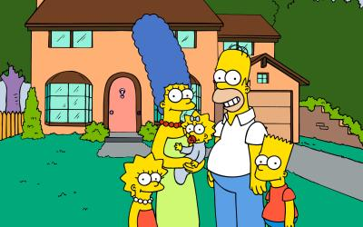
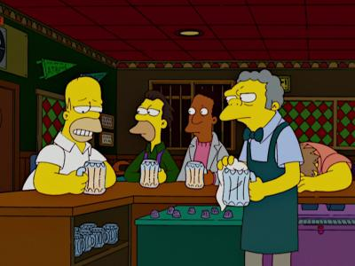
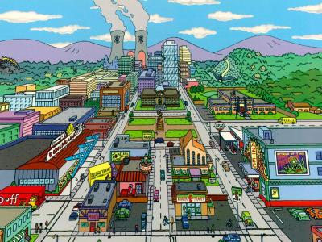

1. В каком городе живут Симпсоны?

Спрингфилд
Сенфилд
Шелбивиль
2. Сколько лет Барту?
3. Кто помощник мистера Бернса?
Сеймур Скиннер
Вейлон Смитерс
Барни Гамбл
4. Как называется бар, где Гомер постоянно пьет пиво?

Напиток
Пещера Джо
Таверна Мо
5. Водитель школьного автобуса
6. Шеф полиции
Клетус Вигам
Чарли Вигам
Кленси Вигам
7. В каком штате живут Симпсоны?

Вашингтон
Флорида
Орегон
Спрингфилд — это выдуманный город